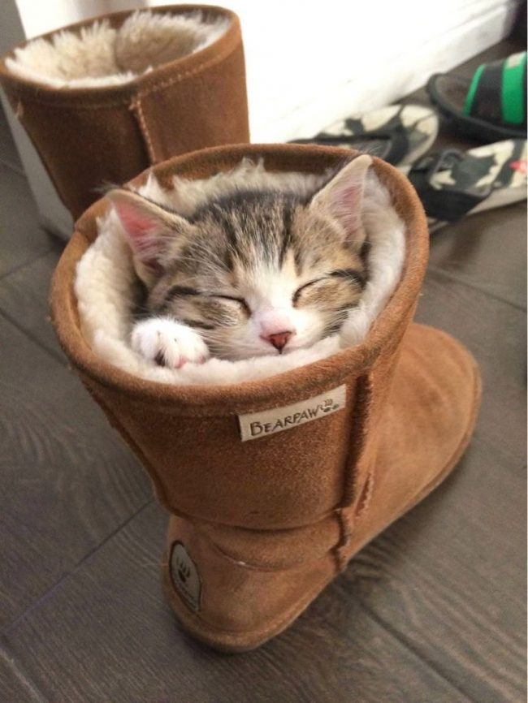

Мое Резюме

Шаловский Владислав Сергеевич
Кратко
Дата рождения: 09.03.1992
Место рождения: Херсон
Профессия: Штурман
Контактная информация
Моб. телефон: +380993513895
Эл. адрес: shalovskiy.vlad@gmail.com
Соц сети: Отсутствуют, для общения использую Telegram
Немного о себе
- Не пью
- Не курю
- Не ругаюсь матом
- Не правда все это, кроме курения
Don't worry be happy
- Девиз, с которым стараюсь идти по жизни
Достижения
- Жены нет
- Дома нет
- Детей нет
- Дерево не посадил
- Такие себе достижения